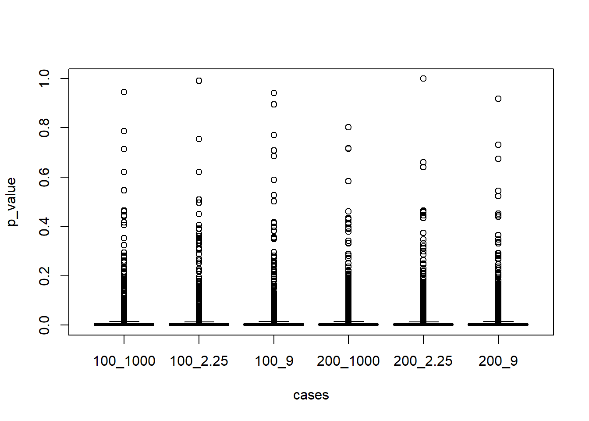
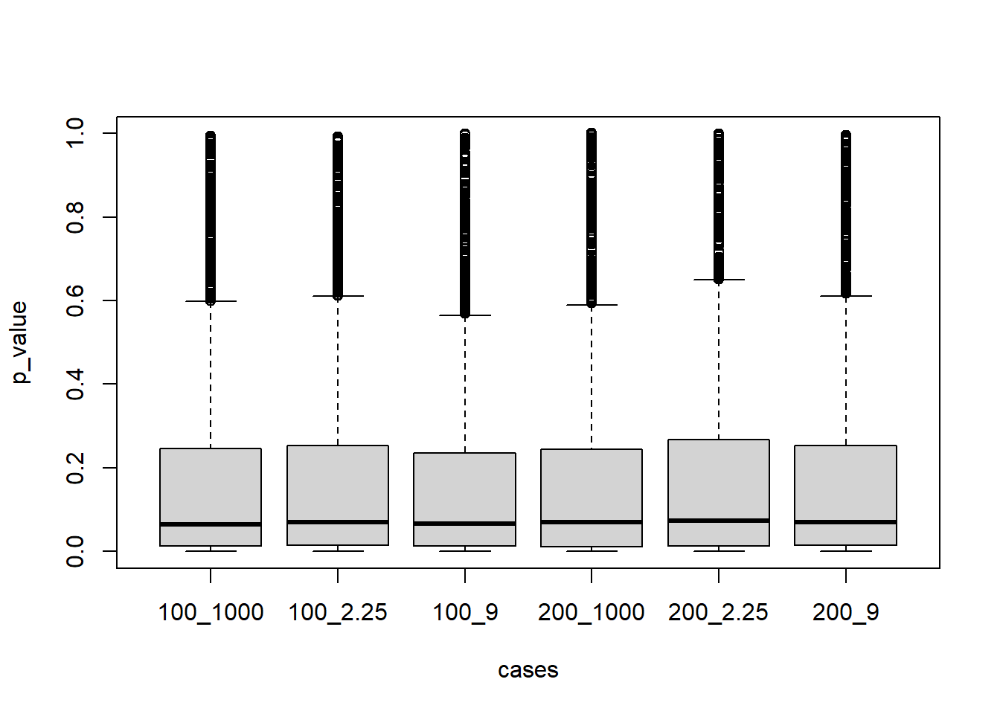

C.3 (c)
beta = -log(2)
alpha = 0.05
pvs = data.frame()
first = 0
for (num_pop in c(100, 200)){
for (cmax in c(1000, 9, 2.25)){ #censoring rates: 0%, 10%, 25%
rejection_count = 0
temp3 = c()
for (iteration in 1:iter){
temp = get_table(100, beta, rho, gamma, c)
temp2 = survdiff(Surv(time_obs, delta) ~ Z, temp)
temp3 = c(temp3, 1 - pchisq(temp2$chisq, length(temp2$n)-1))
#if (1 - pchisq(temp2$chisq, length(temp2$n)-1) < 0.05) rejection_count = rejection_count + 1
}
temp4 = data.frame(temp3, paste0(num_pop, "_", cmax))
if (first == 0) pvs = temp4
else pvs = rbind(pvs, temp4)
first = 1
}
}
colnames(pvs) = c("p_value", "cases")C.3.0.1 (i)
pvs %>% mutate(under005 = p_value <= 0.05) %>% group_by(cases) %>% summarise(rej_count = mean(under005))## # A tibble: 6 x 2
## cases rej_count
## <chr> <dbl>
## 1 100_1000 0.934
## 2 100_2.25 0.940
## 3 100_9 0.924
## 4 200_1000 0.924
## 5 200_2.25 0.932
## 6 200_9 0.931####(ii)
boxplot(p_value ~ cases, data = pvs)
C.3.1 (iii)
beta = -log(2)/2
first = 0
for (num_pop in c(100, 200)){
for (cmax in c(1000, 9, 2.25)){ #censoring rates: 0%, 10%, 25%
rejection_count = 0
temp3 = c()
for (iteration in 1:iter){
temp = get_table(100, beta, rho, gamma, c)
temp2 = survdiff(Surv(time_obs, delta) ~ Z, temp)
temp3 = c(temp3, 1 - pchisq(temp2$chisq, length(temp2$n)-1))
#if (1 - pchisq(temp2$chisq, length(temp2$n)-1) < 0.05) rejection_count = rejection_count + 1
}
temp4 = data.frame(temp3, paste0(num_pop, "_", cmax))
if (first == 0) pvs = temp4
else pvs = rbind(pvs, temp4)
first = 1
}
}
colnames(pvs) = c("p_value", "cases")
pvs %>% mutate(under005 = p_value <= 0.05) %>% group_by(cases) %>% summarise(rej_count = mean(under005))## # A tibble: 6 x 2
## cases rej_count
## <chr> <dbl>
## 1 100_1000 0.457
## 2 100_2.25 0.445
## 3 100_9 0.454
## 4 200_1000 0.451
## 5 200_2.25 0.439
## 6 200_9 0.438boxplot(p_value ~ cases, data = pvs)
Xie, Yihui. 2015. Dynamic Documents with R and Knitr. 2nd ed. Boca Raton, Florida: Chapman; Hall/CRC. http://yihui.org/knitr/.
———. 2021. Bookdown: Authoring Books and Technical Documents with r Markdown. https://CRAN.R-project.org/package=bookdown.